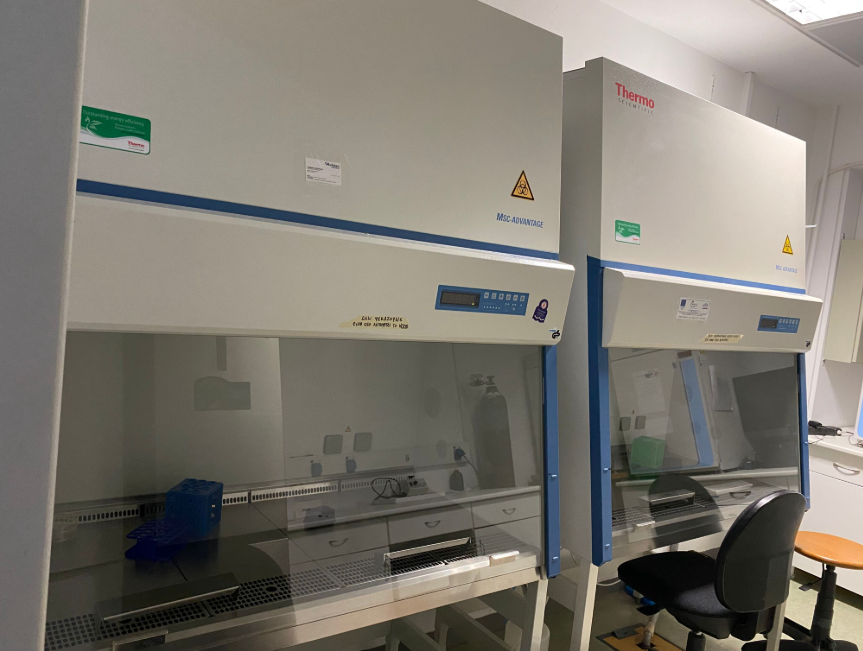
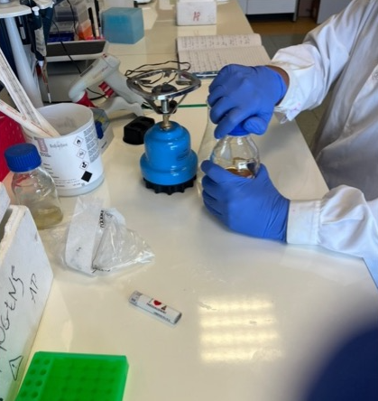
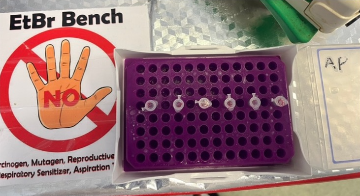
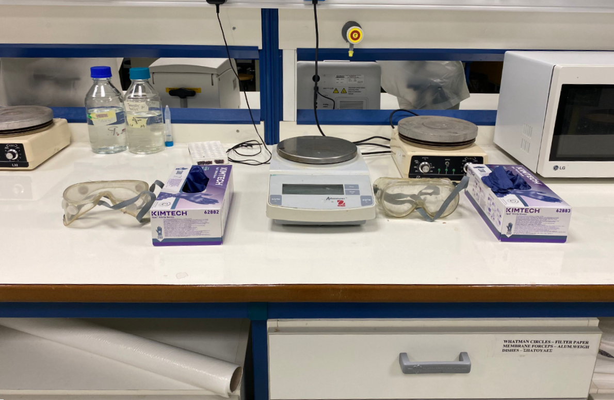
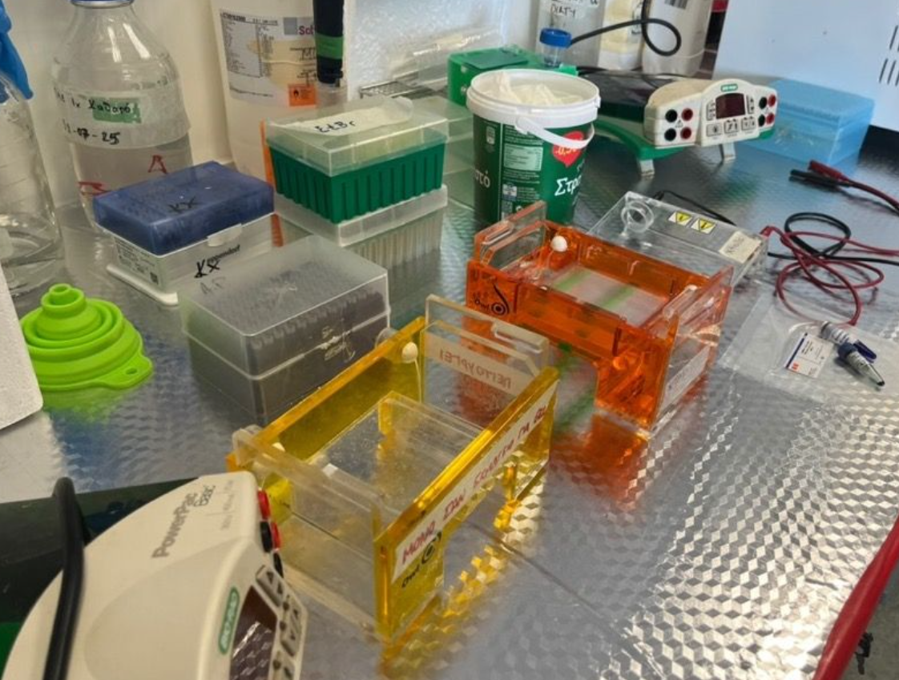
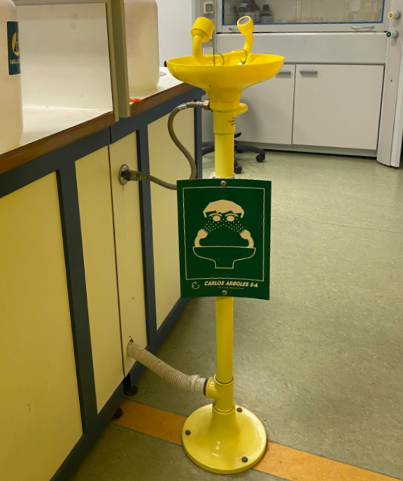
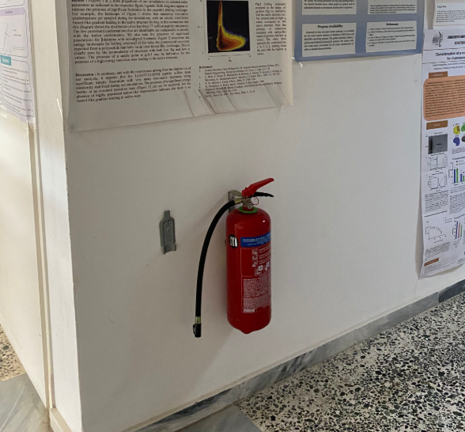
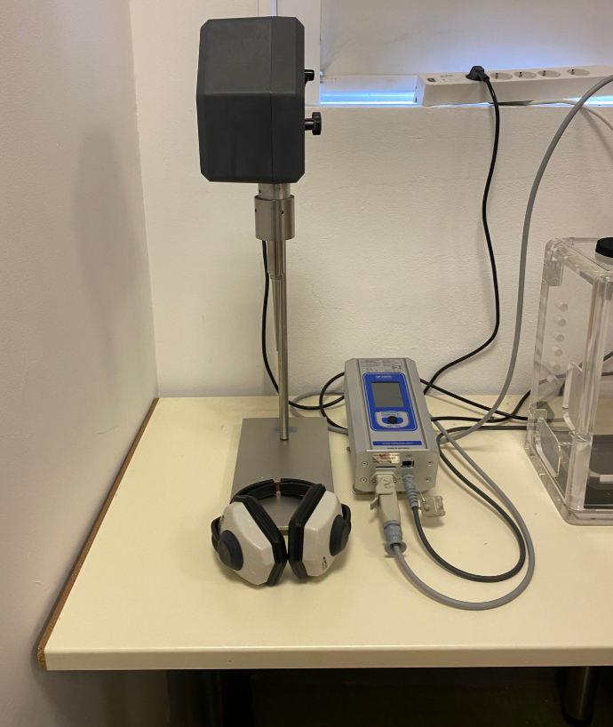

🛡️ Introduction
Safety guided every decision — not as a limitation, but as a foundation for responsible innovation.
Take Me ThereIn the Safety Page, we explain how we’ve ensured that every aspect of our project — from design to deployment — is conducted with the highest standards of biosafety and responsibility.
Safety guided every decision — not as a limitation, but as a foundation for responsible innovation.
Take Me ThereSterile technique, trained personnel, and strict BSL-1 practices ensured safe experimentation.
Take Me ThereFrom closed bioreactors to ethical outreach — no GMOs released, no data unprotected.
Take Me ThereIn Chitinator et al., safety has been a key principle — not just inside the lab, but throughout every phase of our project. Working with genetically modified Escherichia coli to produce chitin-degrading enzymes challenged us to take safety seriously: from how we design constructs and handle waste, to how we engage with the public and imagine the real-world impact of our solution.
As a team, we believe that laboratory safety is only the beginning. True responsibility in synthetic biology goes beyond goggles and gloves — it extends to:
We conducted all lab work in certified BSL-1 facilities, under the supervision of trained personnel. Our outreach and stakeholder engagement followed strict GDPR-aligned protocols, respecting data privacy and personal rights. And our system was designed with containment and biocompatibility in mind — never releasing live organisms, and preparing for applications in compost enrichment or microbial consortia for microplastic degradation.
Through this integrated approach, we developed a deeper understanding of what it means to do science that is not only innovative, but also responsible, ethical, and safe for everyone it touches.
Safety, to us, is not a constraint — it’s the blueprint that allows biology to build responsibly toward a better future.
Before initiating any experimental procedures, we conducted a thorough hazard assessment (Hazard Assessment and Containment Implementation – HACI) to identify all possible risks associated with bacterial handling, enzyme use, and cloning procedures.
Lab work was performed either:

At the bacteria bench, we followed strict sterile practices:

These practices ensured a clean working environment, minimized cross-contamination, and helped contain genetically modified organisms effectively, even in open-bench conditions.
In Chitinator et al., we used antibiotics such as kanamycin and chloramphenicol as selection markers during bacterial culture and protein expression. Given their biological activity and the fact that they are coupled with GMO use, we treated all antibiotic containing waste with extra care.
We established the following waste management practices:
We made sure to never discard untreated genetically modified material or antibiotics in the general waste stream. By following institutional and national biosafety guidelines, we minimized the environmental footprint of our lab work.


All team members working in the lab completed mandatory safety training prior to beginning any experimental work. This included:






Standard Operating Procedures (SOPs) for each major experimental protocol were printed and displayed in visible locations across the lab. Additionally, new members were always supervised by trained individuals until they were fully confident to work independently.
Our training program ensured that everyone understood not just how to perform experiments, but how to do so responsibly and safely.
All wet-lab work for Chitinator et al. was carried out in a certified Biosafety Level 1 (BSL-1) laboratory. The only organisms used were Escherichia coli strains such as BL21 and Rosetta, all of which are non-pathogenic and widely accepted as safe for educational and research use.
To ensure full compliance with national and institutional biosafety regulations:
For the purposes of enzyme expression in Chitinator et al., we selected non-pathogenic Escherichia coli strains, specifically BL21(DE3) and Rosetta(DE3). These strains are both classified as Biosafety Level 1 (BSL-1) and are widely used in synthetic biology and protein production due to their safety profile and high expression efficiency.
Importantly, all work involving these strains was performed exclusively within a certified BSL-1 facility, and bacterial cultures were contained entirely within a closed bioreactor system, with no release of live GMOs at any stage of the process. This choice reflects our team’s commitment to both experimental efficiency and biological responsibility.
In addition to our experimental work in E. coli, we also propose the potential use of Bacillus subtilis strain 168 as a host organism for future implementation of our system, especially in contexts such as soil treatment or large-scale bioreactor fermentation.
B. subtilis 168 is a model Gram-positive bacterium with a long history of safe use in research and industrial biotechnology. It is classified as a Biosafety Level 1 (BSL-1) organism and is Generally Recognized As Safe (GRAS) by international standards. It does not produce toxins or pose risks to human health or the environment.
By proposing B. subtilis 168 for the implementation phase, we aimed to ensure that every stage of our system , from design to deployment , aligns with biosafety and bioethics principles, making Chitinator et al. a safe and scalable solution for real-world applications.
For the first experimental phase of Chitinator et al., we selected the pET-28a(+) plasmid as our expression vector for use in E. coli BL21(DE3) and Rosetta(DE3). This plasmid is well-characterized, widely used in molecular biology, and contains features ideal for high-yield recombinant protein production, including:
In this phase, the use of antibiotics was confined strictly to laboratory settings under certified BSL-1 conditions, and all antibiotic-containing cultures were properly decontaminated prior to disposal.
For the implementation phase, where enzyme production would take place in a closed bioreactor, our aim is to shift to a plasmid system that is free of antibiotic resistance markers. This is particularly important in applications involving environmental interfaces, such as compost enrichment or agricultural soil use, where the use of antibiotic resistance genes is not appropriate.
In this context, we have considered Bacillus subtilis 168 as a suitable host for implementation due to its excellent secretion capabilities and BSL-1 classification. For experimental testing in B. subtilis, we selected the pHT43 plasmid, which is compatible with this chassis and enables secretion of recombinant proteins via the amyQ signal peptide.
However, we recognize that pHT43 contains a chloramphenicol resistance gene, and therefore is not suitable for field use. Our long-term goal is to transition to a plasmid system compatible with B. subtilis that does not rely on antibiotic-based selection, possibly through auxotrophic complementation, toxin-antitoxin systems, or inducible chromosomal integration strategies.
This dual-plasmid strategy – one for testing, one for implementation – reflects our commitment to safe, modular, and responsible synthetic biology, allowing us to optimize both the experimental workflow and future scalability of our system.
| Safety Area | Measures Taken |
|---|---|
| HACI Safety | Use of laminar flow hood or designated bacteria bench with open flame (Bunsen burner), separated GMO waste bins. |
| Antibiotic Use & Waste Management | All GMO waste autoclaved before disposal, no antibiotics discarded in sink, antibiotic stocks safely labeled. |
| Training & Lab Protocols | All members received safety training, proper PPE used at all times, SOPs posted in visible lab areas. |
| Biosafety & GMO Compliance | Work done in BSL-1 lab, only non-pathogenic E. coli strains used, no GMO release; all strains logged and stored securely. |
| Strain selection | Used only BSL-1 E. coli strains (BL21 and Rosetta) in closed bioreactor, no exposure to environment, all strains non-pathogenic and well-documented. |
| Plasmid selection and design | Used pET-28a(+) for lab-phase expression with kanamycin marker under containment, future use of antibiotic-free plasmids planned for B. subtilis implementation (e.g. replacement of pHT43). |
Our project centers around the controlled production of chitin-degrading enzymes within a closed bioreactor system using genetically modified E. coli. At no point do the bacteria exit the reactor or come into contact with the environment. The final product is a purified enzymatic extract, completely free of living GMOs.
This extract can be used in two main application areas:
In both applications, the final material is safe, non-toxic, and entirely free of live genetically modified organisms. We strongly support the principle of zero environmental GMO release, designing all parts of our system to meet the highest standards of biosafety and end-user security.
From the beginning of our project, we considered not only the technical feasibility but also the ecological and social responsibility of our proposed solution. Chitin is a biodegradable polymer found in natural biomass, and its breakdown by chitinases releases nutrients that are beneficial to soil ecosystems.
To prevent any unintentional environmental release, all E. coli cultures used during our experiments were completely inactivated through autoclaving or chemical disinfection prior to disposal. All laboratory activities took place exclusively in a certified BSL-1 facility, with no contact between GMOs and the natural environment.
Importantly, our enzyme production system is designed to operate entirely within a closed bioreactor, ensuring that no genetically modified organism is ever released into the field. The resulting enzymatic extract, free of living cells, is intended for applications such as:
To better understand the impact and potential of our project, we engaged in multiple conversations with stakeholders, including:
All stakeholder interactions were conducted in full compliance with the GDPR and national data protection legislation. No photos, videos, or identifying information were recorded without documented, informed consent. In cases where consent for public use was not given, individuals' faces were blurred or anonymized, and all personal data were treated with strict confidentiality.
As part of our Human Practices and Education efforts, we designed a series of interactive activities aimed at students, educators, and the general public. Ensuring safety during these events — especially when working with minors or non-experts, was one of our top priorities.
To maintain the highest standards of biosafety and accessibility:
Through this framework, we ensured that our science education initiatives were not only fun and engaging, but also ethically and legally responsible, inspiring curiosity while safeguarding individual rights.
At Chitinator et al., we believe that ethical awareness must be integrated into every stage of synthetic biology, from design to implementation. From the beginning, we were committed to building a system that is not only effective, but also safe, transparent, and socially acceptable.
We took several conscious steps toward a responsible design:
Throughout the design and testing of our system, we remained guided by the belief that synthetic biology must serve the world not only through innovation, but through responsibility, transparency, and respect for the environment and society.
| Area | Safety Measures Taken |
|---|---|
| End-User & Product Safety | Final product contains only purified enzymes from a closed bioreactor, no GMO release at any stage. |
| Environmental & Stakeholder Safety | Cultures fully inactivated before disposal; no release of GMOs; all stakeholder engagement done responsibly and confidentially. |
| Educational & Outreach Safety | No GMOs used in public activities; only non-toxic and classroom-safe materials; faces and data protected per GDPR. |
| Ethical & Responsible Design | Commitment to transparency, containment-based safety, and future consideration of control systems. |